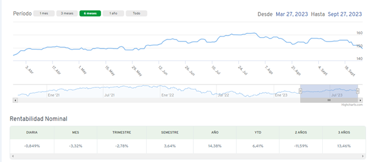
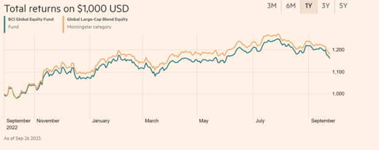

Hito 2
Descripción Activo y Contexto (Hito 1)
Fecha de entrega: Jueves 28 de Septiembre 23:59.
Definición
Para el presente proyecto, se buscará hacer un análisis profundo sobre los comportamientos financieros del banco Bci (Banco de Crédito e Inversiones). El banco Bci, fundado en 1937, es uno de los bancos mas grandes y establecidos en el país. Bci ofrece una amplia gama de servicios, como banca personal y comercial, servicios de inversión, seguros y mucho más, pero nos enfocaremos específicamente en el activo de fondos mutuos. Los fondos mutuos son un instrumento de inversión que reúne los aportes monetarios de distintas personas, naturales o jurídicas, para invertirlos en diferentes instrumentos de mercado de valores como por ejemplo acciones, instrumentos de renta fija y/o de deuda.
Dentro del articulo “Asset management and investment banking” por Janis Berznins, el cual describe como los conflictos de interés en el negocio de gestión de activos de propiedad por bancos de inversión y conglomerados no bancarios son comunes, estudia como varían los alphas de los fondos mutuos en relación a cuando se invierte en aquellos que son propiedad de los bancos de inversión o cuando son invertidos por entidades no bancarias, dando como resultado una pérdida económica para los inversores que invierten con bancos, logrando una perdida económica de 4.9 billones por año.
El activo BCI tiene un valor promedio para el intervalo igual a 2.3028^{4}
CMPC %>%
ggplot(aes(x = date, y = close)) +
geom_candlestick(aes(open = open, high = high, low = low, close = close)) +
labs(title = "AAPL Candlestick Chart", y = "Closing Price", x = "") +
theme_tq()
Motivación
El banco BCI es una corporación financiera chilena controlada por la familia Yarur desde su fundación hace 76 años. Es el tercer mayor banco privado en Chile y cuenta con una sólida clasificación de riesgo internacional (A1: Moody´s, A: S&P y Fitch ratings: A-). Cuenta con 384 puntos de contacto a lo largo de Chile y presencia internacional en EEUU, Colombia, Perú, Brasil, México y España. Ofrece productos tales como cuentas corrientes, depósitos, préstamos, tarjetas de crédito, factoring, leasing, cash management, comercio exterior, fondos mutuos, asesorías financieras, operaciones de mesa de dinero, intermediación de acciones, bonos y seguros entre otros. Durante 2013 fue premiada en Chile como la empresa más transparente, con mejor gobierno corporativo, como el mejor grupo financiero, como la mejor banca privada, como la mejor administradora de fondos mutuos y reconocida con el mejor servicio y experiencia de clientes en la categoría bancos grandes (encuestas Ipsos/Izo).
Contexto
Como se mencionó anteriormente, se hará un análisis financiero sobre el banco Bci pero enfocado particularmente en uno de sus fondos mutuos. Para continuar con el análisis, se investigará sobre variables que pueden afectar el activo, entregando estadística descriptiva y gráficos.
En primer lugar, se analizará el fondo mutuo Bci Acciones Globales, el cual es un fondo mutuo de serie de alto patrimonio el cual su objetivo principal es “El objeto de inversión del Fondo será principalmente invertir en cuotas del sub fondo extranjero, domiciliado en Luxemburgo, denominado”BCI AM SICAV - Global Equity Fund” (denominado en adelante el “Sub Fondo Extranjero”). El Fondo deberá mantener invertido al menos un 70% de sus activos en el Sub Fondo Extranjero.”
Al ser un fondo de moneda extranjera, se tomará como variable el precio del colar en Chile, el cual en un periodo de 6 meses ha tenido un incremento de un 14.73% obteniendo un valor de $909 CLP a la fecha.
Por último, se analizará el fondo “BCI AM SICAV - Global Equity Fund”, el cual es el fondo extranjero en donde se invierte por lo menos el 70% de los activos del fondo a analizar. El fondo extranjero ha tenido un incremento de un 15,53% a la fecha y tiene un tamaño de 31.26 millones de dólares.

Rentabilidad Fondo Mutuo Bci Acciones Globales

Rentabilidad Fondo Extranjero

Análisis de Largo Plazo
Caracterización deuda (Aplicación cap. 15)
Como se mencionó anteriormente, nos focalizaremos en el fondo mutuo Acciones Globales. El Fondo Mutuo Bci Acciones Globales dirigido a inversionistas calificados de libre inversión extranjero - derivados, domiciliado y constituido bajo las Leyes chilenas. El objeto de inversión del Fondo será principalmente invertir en cuotas del sub fondo extranjero, domiciliado en Luxemburgo, denominado “BCI AM SICAV - Global EquityFund” (denominado en adelante el “Sub Fondo Extranjero”). El Fondo deberá mantener invertido al menos un 70% de sus activos en el Sub Fondo Extranjero.
El Sub Fondo Extranjero tiene como objeto invertir al menos el 70% de sus activos en un portfolio compuesto por instrumentos de capitalización UCIT´s o UCI´s, con exposición a activos en todo el mundo (desarrollado y emergente). Los instrumentos que utilice el Sub fondo están domiciliados en EEA (EuropeanEconomicArea).
La diversificación del activo total del fondo se distribuye en:

Caracterización de emisiones históricas (Aplicación cap. 20)
Los aportes del Fondo deberán ser pagados en pesos, el aporte recibido se expresará en cuotas del Fondo, utilizando el valor de la cuota correspondiente al mismo día de la recepción si este se efectuase antes del cierre de operaciones del Fondo o el valor de la cuota de día siguiente al de la recepción, si el aporte se efectuare con posterioridad a dicho cierre. En caso de colocaciones de Cuotas efectuadas en los sistemas de negociación bursátil autorizados por la Comisión para el mercado financiero, el precio de la Cuota será aquel que libremente estipulen las partes en esos sistemas de negociación.
Relación con activos derivados
El fondo analizado opera con instrumentos financieros derivados con la finalidad de tener una mayor cobertura de riesgos asociados a su inversión. El uso de instrumentos financieros derivados como cobertura también conlleva riesgos, como la posibilidad de que exista una correlación imperfecta entre el valor de los contratos de derivados y las inversiones objeto de cobertura, lo que puede llevar a multiplicar las perdidas o ganancias de la cartera.
Cuando el Fondo mantiene instrumentos financieros derivados que se pagan por compensación utiliza precios de mercado intermedios como una base para establecer valores razonables para compensar las posiciones de riesgo y aplica este precio de compra o venta a la posición neta abierta, según sea apropiado.
El valor razonable de activos y pasivos financieros que no son transados en un mercado activo como derivados extrabursátiles, también son determinados usando la información financiera disponible por la agencia de servicios de pricing RiskAmerica.
Reporte grupal
El objetivo del portafolio es de largo plazo, por lo que se estudiará a más de un año, buscando retornos altos en el largo plazo y teniendo presente el riesgo que implica esto. El portafolio es de renta variable, por lo que siempre se tendrá que considerar el riesgo que este tipo de inversiones implica.
Para poder obtener las ponderaciones del portafolio, se debe realizar un análisis a cada activo por invertir, donde se consideraron los Beta de cada acción y las industrias pertenecientes a cada activo.
Banco Bci está presente en la industria bancaria donde a grandes rasgos las inversiones están asociadas al manejo de carteras, en donde se analizará específicamente la inversión al Fondo Mutuo de Acciones Globales por parte del grupo Bci. Este fondo es de moneda extranjera el cual invierte principalmente en cuotas del subfondo extranjero, domiciliado en Luxemburgo, denominado “BCI AM SICAV - Global EquityFund”.
Colbún es la tercera empresa más grande en el sector eléctrico chileno y ha tenido un aumento en activos en el último año. La empresa ha ido en un crecimiento constante desde que cambió de controlador, siendo dirigida principalmente por la familia Matte, bajo la empresa Minera Valparaíso. Los últimos años ha presentado un plan de largo plazo para generar en gran cantidad energía sustentable, con el fin de alinearse con las necesidades actuales. Aunque actualmente presenta un mes de rentabilidad negativa, su anualidad en los dos últimos años, es de alrededor de un 40%, lo que lo hace una empresa interesante para invertir, considerando un riesgo alto.
Cencosud está invirtiendo fuertemente en Estados Unidos, con una promesa de abrir una nueva tienda cada 33 días. Por lo tanto, las ganancias que obtenga la empresa serán a largo plazo cuando estas comiencen a operar, entonces se espera que el valor de la acción continúe creciendo moderadamente como ha sido a lo largo del año.
Según las estadísticas de Yahoo Finance, los betas de los activos tienen las siguientes cifras; 0.37 COLBÚN, 0.18 BCI, 0.55 CENCOSUD.
| Activo | Betas |
| CENCOSUD | 0.55 |
| COLBUN | 0.37 |
| BCI | 0.18 |
Además, los retorno anuales de estos respectivamente son; 46.48% para COLBÚN, 11.9% para BCI y 29.97% para CENCOSUD.
| Activo | Rentabilidad |
| CENCOSUD | 29.97% |
| COLBUN | 46.48% |
| BCI | 11.9% |
A este portafolio se le invertirá 100 millones de pesos chilenos con las siguientes ponderaciones:
| Activo | Ponderación |
| CENCOSUD | 30% |
| COLBUN | 50% |
| BCI | 20% |
Este conjunto de inversiones, diseñado para personas que prefieren un nivel moderadamente alto de seguridad financiera, asigna el 30% de los recursos al activo más arriesgado, que tiene una mayor sensibilidad al riesgo (medida por su beta). Hemos asignado un 20% a BCI, ya que esperamos que tenga una volatilidad limitada debido a su rentabilidad moderada y su baja sensibilidad al riesgo. Además, hemos dado prioridad a los activos que han experimentado un mayor aumento en su valor durante el año, asignándoles una mayor ponderación en la cartera. Finalmente se ponderó un 50% de Colbún para poder obtener el retorno alto esperado, debido a que es una empresa que muestra un beta de 0.37, el cual no lo hace tan riesgosa y tiene los retornos esperados más altos.
Warning: The following aesthetics were dropped during statistical transformation: open,
high, low, close, y
ℹ This can happen when ggplot fails to infer the correct grouping structure in
the data.
ℹ Did you forget to specify a `group` aesthetic or to convert a numerical
variable into a factor?
The following aesthetics were dropped during statistical transformation: open,
high, low, close, y
ℹ This can happen when ggplot fails to infer the correct grouping structure in
the data.
ℹ Did you forget to specify a `group` aesthetic or to convert a numerical
variable into a factor?
The following aesthetics were dropped during statistical transformation: open,
high, low, close, y
ℹ This can happen when ggplot fails to infer the correct grouping structure in
the data.
ℹ Did you forget to specify a `group` aesthetic or to convert a numerical
variable into a factor?Warning: The following aesthetics were dropped during statistical transformation: x,
open, high, low, close, y
ℹ This can happen when ggplot fails to infer the correct grouping structure in
the data.
ℹ Did you forget to specify a `group` aesthetic or to convert a numerical
variable into a factor?
The following aesthetics were dropped during statistical transformation: x,
open, high, low, close, y
ℹ This can happen when ggplot fails to infer the correct grouping structure in
the data.
ℹ Did you forget to specify a `group` aesthetic or to convert a numerical
variable into a factor?
The following aesthetics were dropped during statistical transformation: x,
open, high, low, close, y
ℹ This can happen when ggplot fails to infer the correct grouping structure in
the data.
ℹ Did you forget to specify a `group` aesthetic or to convert a numerical
variable into a factor?
Aplicación Black-Scholes
El modelo de Black-Scholes es un metodo utilizado para valorar opciones financeras de un activo. Se basa en la suposicion de los precios del activo financiero, los cuales siguen un proceso estocastico logaritmico. El modelo utiliza varios parametros, principalmente el precio actual del activo, el precio de ejercicio de la opcion, el tiempo de expiracion y la volatilidad del activo. Tambien incluye la tasa libre de riesgo. Obteniendo estos datos se calcula el valor teorico de una opcion financiera.
En este caso, el activo escogido para el Hito 1 pertenece al Banco Credito e Inversiones (BCI), pero al no tener opciones se prefirio estudiar el banco Santander, el cual es un banco similar al BCI y si esta abierto a opciones dentro de la bolsa. Aun asi, existen ciertos riesgos asociados a las diferencias entre ambos bancos que podrian afectar la precision del resultado.
A continuacion utilizaremos un codigo de Pyhton para valorizar una opcion del banco Santander, con fecha de 19 de enero del 2024, la cual utiliza la informacion de YahooFinance.
[*********************100%%**********************] 1 of 1 completed
[*********************100%%**********************] 1 of 1 completed3.273301499697696En resumen, el valor obtenido es de 3.3 aproximadamente, lo que nos dice que según el modelo de Black-Scholes ese seria el valor teroico estimado del activo en ese momemnto, asuiendo que sigue los supuestos y parametros utilizados en el modelo.
Modelo Adicional de Valorizacion
Dentro del articulo hecho por Maria Ines Barbosa, Alejandra Salazar y Kelly Jhohana el cual habla sobre la valoración de riesgo mediante modelos GARCH y simulación Montecarlo, nos dice que “El método de simulación Montecarlo permite la estimación de manera paramétrica y no paramétrica, ofrece una descripción más realista del riesgo a partir del ajuste de una distribución empírica de los retornos.” El modelo Montecarlo que se puede utilizar para valorizar activos consiste en generar múltiples trayectorias aleatorias del precio del activo subyacente y se calcula el valor esperado de la opción tomando en cuenta todas las posibles trayectorias.
La fórmula matemática para el Modelo de Montecarlo es la siguiente:
V = e^(-rT) * Σ[Payoff(S)] / N
Donde:
V representa el valor estimado de la opción.
r es la tasa libre de riesgo.
T es el tiempo hasta la expiración de la opción.
Payoff(S) representa el pago resultante de cada una de las trayectorias aleatorias del precio del activo subyacente S.
N es el número total de trayectorias generadas.
Utilizando simulaciones Monte Carlo, se generan múltiples trayectorias aleatorias del precio del activo subyacente y se calcula cada uno de los pagos resultantes para luego promediarlos y descontarlos al valor presente utilizando la tasa libre de riesgo. Este resultado representa una estimación del valor teórico esperado para la opción.
Aplicacion modelo adicional
Usando un codgio en Python, valorizamos una opcion del banco Santander utilizando el metodo Monte Carlo:
[*********************100%%**********************] 1 of 1 completed
[*********************100%%**********************] 1 of 1 completed3.273408971546544El valor obtenido utilizando el metodo de Montecarlo es de 3.3 aproxiamdamente, logrando un valor bastante similar a Black-Scholes.
Análisis de contraste de ambos modelos
Analizando el contraste de ambos modelos, podemos notar que los valores son bastante parecidos o incluso casi iguales. Esto es positivo y puede dar mayor confianza en la precisión de las valoraciones realizadas. El hecho de que ambos modelos produzcan resultados cercanos nos dice que tanto el enfoque analítico (Black-Scholes) como el enfoque basado en simulaciones (Montecarlo) están capturando adecuadamente los factores relevantes para valorizar el activo.
Sin embargo, es importante tener en cuenta que estos resultados aún son estimaciones teóricas y podrían diferir del valor real del activo. Además, hay que considerar las limitaciones y supuestos asociados a cada modelo.
En resumen, si los valores obtenidos con Black-Scholes y Montecarlo son similares, esto nos da un respaldo adicional a la valoración realizada. Sin embargo, siempre es recomendable realizar análisis adicionales y considerar otros factores relevantes.
Reporte Grupal: Caso Administración
- Se espera un aumento de 8% en las ventas de cada trimestre, y como las ventas del primer trimestre actual fueron 735000, lo que multiplicado por el 8%. T1 A 2= 735000*1.08=793800 . Luego las cuentas por cobrar cobrar serán iguales al pronóstico de ventas multiplicado por el periodo de cuentas por cobrar, luego se resta el porcentaje "incobrable" Cuentas por cobrar=(793800*57365)- (10%*793800)=124446. Por el lado del forecast de suministros se calcula como Suministros T1 A2=50% de ventas proyectadas para T2=50% de 793800=396900. Pagos a proveedores, la empresa se demora en promedio 53 días en pagarle a sus proveedores, por lo tanto la ecuación queda de la siguiente manera Pagos a proveedores T1 A2=53365*793800= 115140. Siguiendo con los costos que se proyectan, los cuales se definieron como el 25% del forecast de ventas, por lo que corresponde a Costos=25%*793800= 198450. El flujo de efectivo neto para T1 A2 va a ser igual a las ventas proyectadas menos el pagos a proveedores menos los costos Flujo de Efectivo Neto= 793800-115140-198450=480210. Con todo lo anterior podemos calcular el saldo de efectivo al final de T1A2, el cual se define como Saldo de efectivo al final de T1A2=1495000+480210=1975210
De forma más ordenada se procederá a dejar una tabla con la información de los cálculos para cada uno de los trimestres.
››››
| Trimestre 1 | Trimestre 2 | Trimestre 3 | Trimestre 4 | |
| Ventas proyectadas | 793800 | 857424 | 944837 | 890408 |
| Cuentas por cobrar | 124446 | 134595 | 148301 | 139524 |
| Suministros proyectados | 396900 | 437410 | 412062 | 396900 |
| Pagos a proveedores | 115140 | 123781 | 136511 | 129649 |
| Costos proyectados | 198450 | 214356 | 236209 | 222602 |
| Flujo de Efectivo Neto | 480210 | 519287 | 572117 | 538157 |
| Saldo de Efectivo al Final del Trimestre | 1975210 | 2494497 | 3066614 | 3604771 |
Realizar este cambio en el saldo mínimo de efectivo solo implica que la empresa va a reducir su "colchón" económico, con lo que estaría dispuesto a poner mayor cantidad de efectivo en circulación para conseguir sus objetivos y poder suplir la demanda solicitada. Como se puede ver en la tabla anterior, tanto para 90000 dólares como para los 70000 dólares no será necesario, ya que el flujo mínimo está muy por encima del mínimo, debido a esto Kiefer no presentará problemas económicos según sus proyecciones.
Para calcular nuevamente el presupuesto de ventas con un crecimiento de 5% y 11% en las ventas con respecto al trimestre del año anterior y como dice manteniendo el saldo mínimo en lo que Adam propuso, lo que es un valor de 90000. A continuación se encontrará una tabla resumen de los resultado:
| Ventas | Trimestre 1 | Trimestre 2 | Trimestre 3 | Trimestre 4 |
| Crecimiento de 5% | 833490 | 900295 | 992079 | 935928 |
| Crecimiento de 11% | 881778 | 950590 | 1048264 | 988653 |
Por lo que se puede ver en la tabla, habría problemas para suplir en ambos casos las proyecciones de ventas del trimestre 1 siguiente, debido a esto se tendrá que buscar alguna solución la cual puede ser desde evaluar opciones de inversiones para suplir el excedente, estudiar la demanda con un caso de sensibilidad, negociar pagos con los proveedores, al igual de negociar los costos con los mismos, optimizar la logística para reducir costos, entre otras cosas.